Docker Compose and Docker Swarm
Define multi-container applications with Compose and orchestrate replicated services with
Docker Swarm
.
🎯 Objective
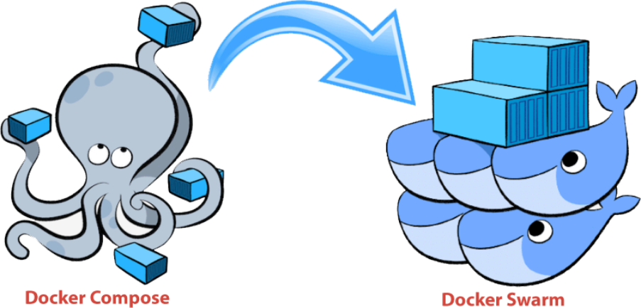
In this lab, you will learn the concepts and basic commands for the following topics, then apply them to a working application:
-
Docker Compose: an excellent tool for development, testing, CI workflows, and staging environments. -
Docker Swarm: a tool allows you to manageDockerengine clusters locally within the Docker platform. You can use the Docker CLI to create a cluster, deploy application services to the cluster, and manage cluster behavior.
🧩 1. Docker Compose
In this section, we will learn how to use
Docker
Compose
to deploy a
simple
voting
application
.
A great sample application for docker & docker compose demonstration!
The voting application source files are available on GitHub:
https://github.com/TomHuynhSG/simple-voting-application
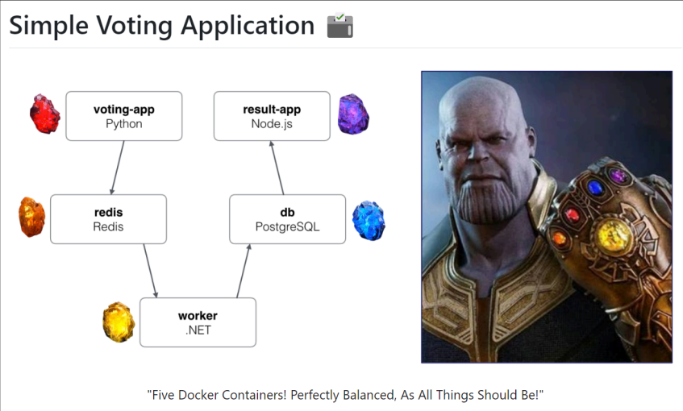
Indeed, this is a distributed application running across five Docker containers.
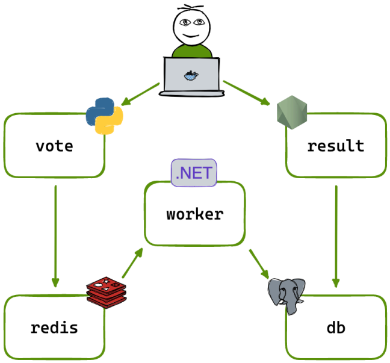
The Simple Voting Application Docker project consists of five Docker containers connected as follows:
-
Vote : A
Flaskfront-end app that allows users to vote between two options. -
Redis: A Redis queue that collects new votes. -
Worker : A
.NETCore and Java application that processes votes and stores them in aPostgreSQLdatabase. -
Database (db) : A PostgreSQL database container.
-
Result : A
Node.jsapp that displays the voting results in real time.
Docker Compose
is used to define and run these multi-container Docker applications. The
docker-compose.yml
file specifies the configuration of each service and their interconnections.
☁️ 1a. Create the Docker Compose EC2 server
In
this
experiment,
we
only
need
one
single
EC2
instance
to
learn
docker-compose
:
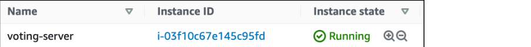
-
Here are the settings of the EC2:
-
Name : up to you! You can choose the name “
voting-server”. -
OS : default Amazon Linux 2023 AMI (Free-tier)
-
Instance Type : t3.micro (Free-tier)
-
Key pair : select and reuse your old key in other labs (
devops_project_key) -
Storage : Default 8 GB is plenty enough!
-
Security Group:
-
Optional Name:
voting-app-security-group -
Source Type: Anywhere
-
Open these ports:
-
22 for SSH
-
8080-8081 (only two ports 8080 and 8081)
-
-
-
📦 1b. Install the required tools
-
After that, let’s SSH to the EC2 server.
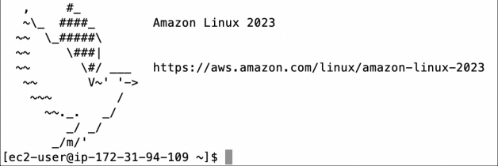
-
To keep things simple without dealing with permission, let’s login as a root user and change our current directory to /root:
sudo su -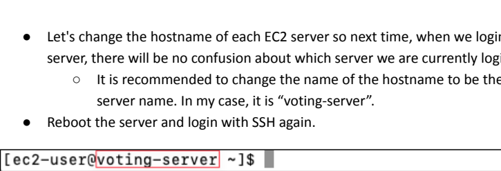
-
Let's change each EC2 server's hostname so that the next time we log in, it is immediately clear which server we are using.
-
It is recommended to change the name of the hostname to be the same as your ec2 server name. In my case, it is “
voting-server”.
-
-
Reboot the server and login with SSH again.
-
Don’t forget to login as the root user:
sudo su --
Install Git:
yum install -y git-
Install
Docker:
yum install -y docker-
Start Docker:
service docker start-
Check Docker’s service status:
service docker status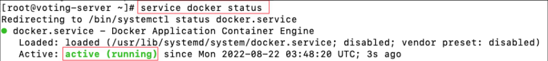
-
Git clone this repository:
git clone https://github.com/TomHuynhSG/simple-voting-application.git-
Change current directory inside it:
cd simple-voting-application-
Let’s list all files and directories inside our voting project:
ls -la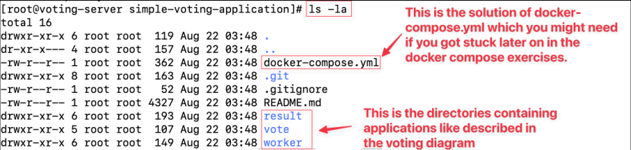
🛠️ 1c. Deploy the application without Docker Compose
-
Change current directory to vote directory which contains the voting website:
cd votePlease feel free to explore this folder to understand how the vote website works.
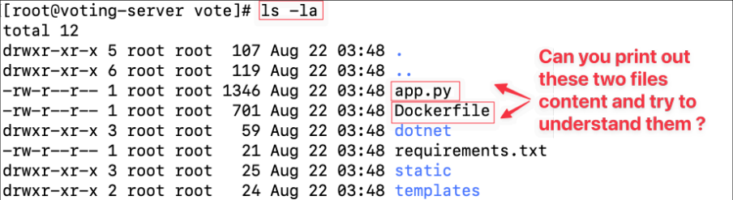
-
Checkout the
Dockerfileof that voting website:
cat DockerfileCan you figure out line by line what it does?
-
Build a
Dockerimage of voting application with that Dockerfile:
docker build . -t voting-app-
Check if the new
voting-appimage is there:
docker images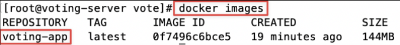
Aha, the
voting-app
image is here!

-
Run a Docker container from the voting app image ➜ The voting website is now live via
port 8080:
docker run --name voting-container -p 8080:80 voting-app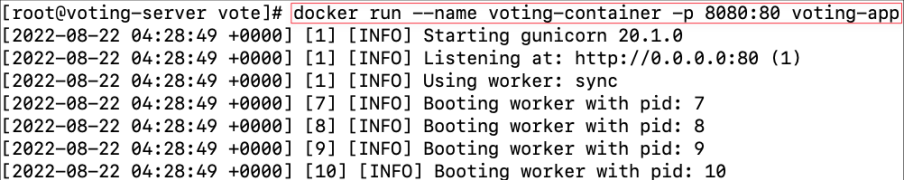
Remember, we run the container without the “
-d
” detach mode so we can see what is happening inside the container when we send the requests via the browser.
Let’s open the website via the
port 8080
on your browser:
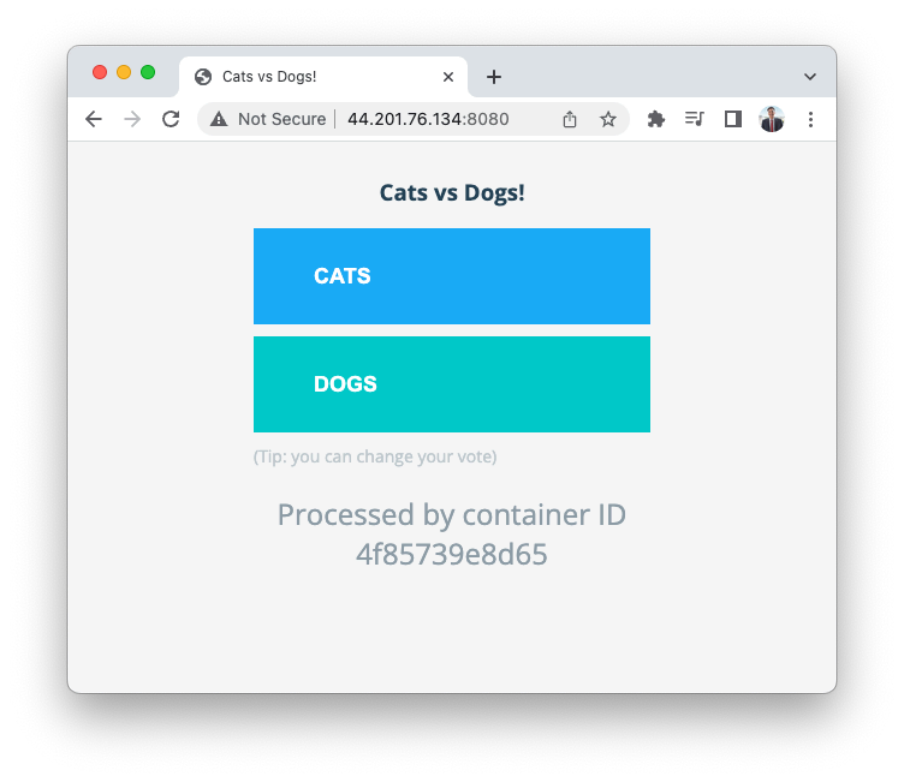
Very nice! However, when you interact with the website by voting for either cats or dogs, we receive an internal server error:
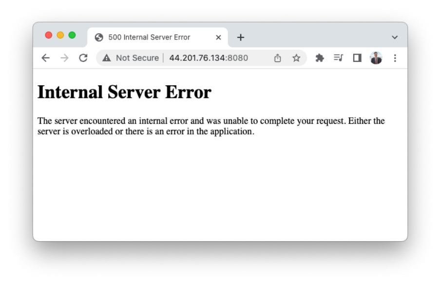
[Question] Why is that?
If you check your terminal, you will see an error message inside our
voting-app
container:
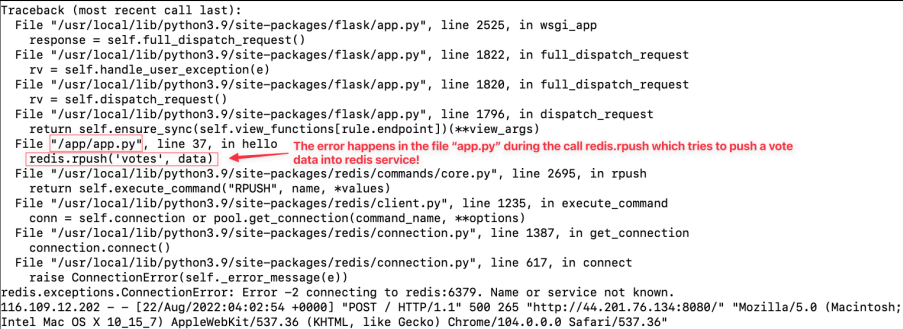
[Explanation]
In the
app.py
, the Python Flask application looks for the “redis” (in-memory data structure store) to store the new voting. Since there is no redis container running, that’s why we got the error.
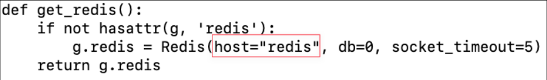
That’s why we need to run the redis container first!
-
You can stop the running
voting-appcontainer by pressing the keys combination “Ctrl+C”
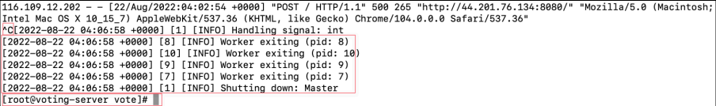
-
Let’s remove the
voting-appcontainer so we can start from scratch but correctly this time:
docker ps -a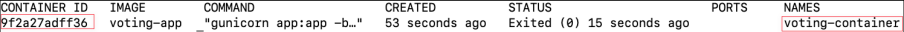
docker rm <container_id or container_name>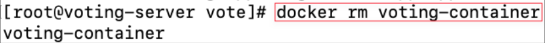
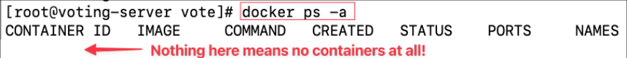
Good! Let’s start from scratch again!
-
Run a Docker container from the
Redisimage ofDocker Hub:
docker run -d --name=redis redis
[Info]
You can learn more about the redis image on
Docker Hub
here:
https://hub.docker.com/_/redis
. Keep in mind that in a voting application (like polls, upvotes, likes),
Redis
is often used as a message queue or in-memory store to handle a high volume of votes quickly.
Redis
is an in-memory database, so
it
can
handle
thousands
or
millions
of
vote
operations
per
second
with
very
low
latency.
The purpose of a Redis container in a voting queue system is to act as a
fast,
reliable
middle
layer
that
collects
votes
instantly
, ensures they are processed safely, and
relieves
pressure
on
the
backend
database.
-
Check if the new redis container is there and running:
docker ps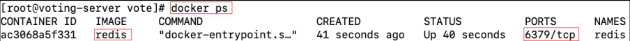
-
Run a Docker container from the voting app image ➜ The voting website is now live via
port 8080:
docker run -d --name voting-container -p 8080:80 --link redis:redis voting-app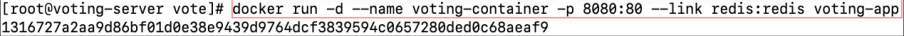
Notice
that,
we
use
“
-d
”
detach
mode
so
a
Docker
container
runs
in
the
background
of
your
terminal.
It
does
not
receive
input
or
display
output.
Also,
we
use
“
--link
”
to
add
links
to
another
container
so
they
can
connect
together
(allow
containers
to
discover
each
other
and
securely
transfer
information
about
one
container
to
another
container).
So
far,
we
have
two
containers
running:
voting-container
and
redis
like
below
diagram:
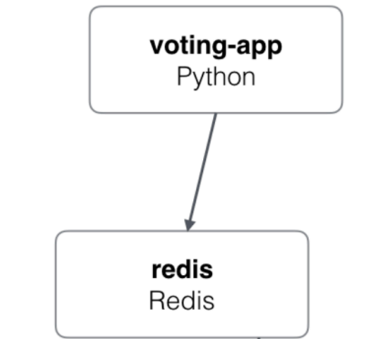
Let’s open the website via the
port 8080
on your browser:
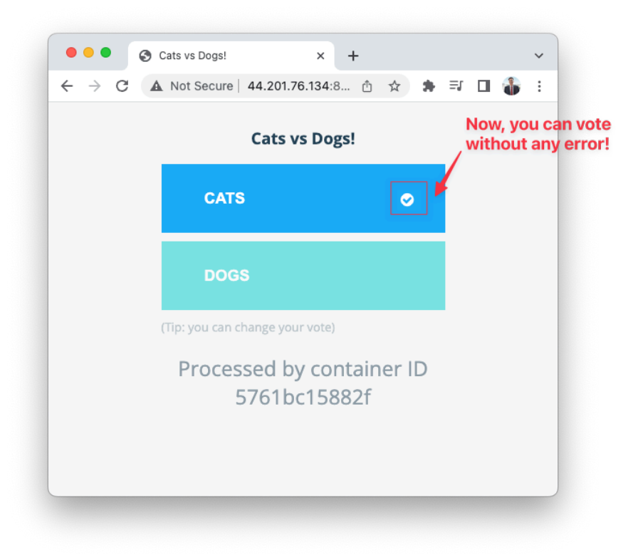
Very nice! Now you can interact with the website by voting for either cats or dogs.
However, we need to complete other containers, so we can have a result page to show the voting result so far.
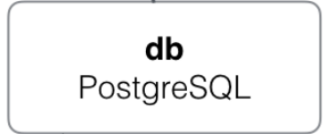
-
Run a Docker container from the
Postgresimage of Docker Hub:
docker run -d --name=db -e POSTGRES_PASSWORD=postgres postgres:9.4
For
the
Postgres
container,
the
only
variable
required
is
POSTGRES_PASSWORD
.
The
only
variable
required
is
POSTGRES_PASSWORDThis
environment
variable
sets
the
superuser
password
for
PostgreSQL
.
The default superuser is defined by the
POSTGRES_USER
environment variable. You can read it more here:
https://hub.docker.com/_/postgres
-
Check if the new postgres container is there and running:
docker ps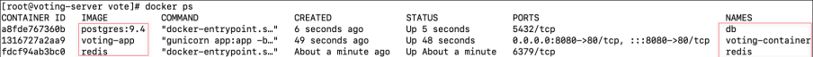
So
far,
we
have
three
containers
running:
voting-container
,
db
and
redis
like
below
diagram:
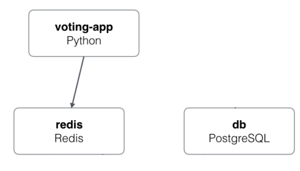
-
Change current directory to
worker-appdirectory:
cd ../worker-
Inspect the Dockerfile of that voting website:
cat Dockerfile
Can you figure out line by line what it does?
Note
: this Dockerfile is building and packaging a
.NET
Core Worker service to read from the Redis votes list, aggregates votes, and writes results eventually in PostgreSQL containers.
-
Build a Docker image of worker app with that Dockerfile:
docker build . -t worker-app-
Check if the new work image is there:
docker images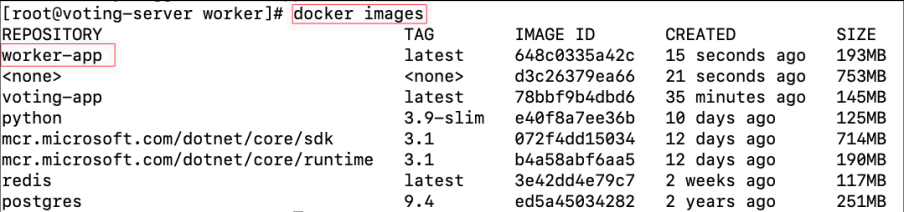
-
If you look inside “
Worker.java” in “src/main/java/worker” directory, you should see that the Worker application depends on redis and db services:
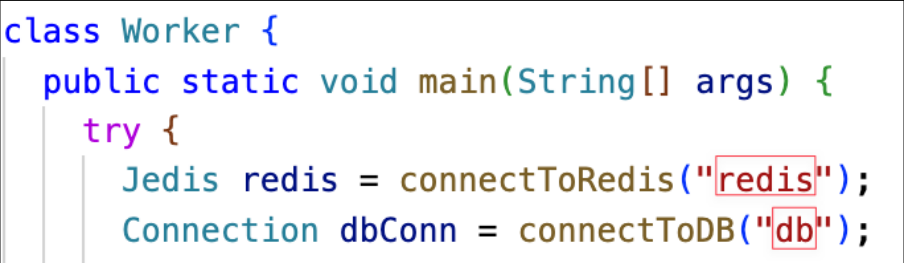
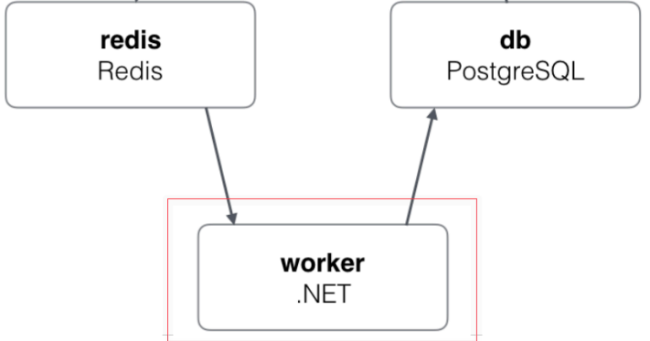
-
Run a Docker container from the worker app image. Note, do you notice we have “
--linkredis:redis--linkdb:db” to link connections between different containers?:
docker run -d --name worker-container --link redis:redis --link db:db worker-app-
Check if the new worker container is there and running:
docker ps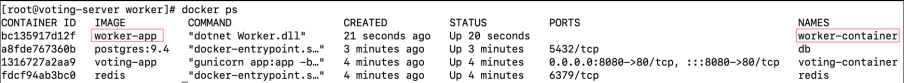
-
Change current directory to result directory which contains the result website:
cd ../result-
Inspect the Dockerfile of that result website:
cat DockerfileCan you figure out line by line what it does?
Note
: this Dockerfile is building the Result website of the voting app with
Node.js
. This Result app reads the votes from PostgresSQL container and serves a web page with current vote counts.
-
Build a Docker image of result app with that Dockerfile:
docker build . -t result-app-
Check if the new
result-appimage is there:
docker images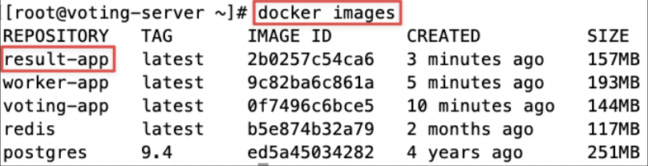
-
Run a Docker container from the result app image ➜ The result website is now live via
port 8081:
docker run -d --name result-container -p 8081:80 --link db:db result-app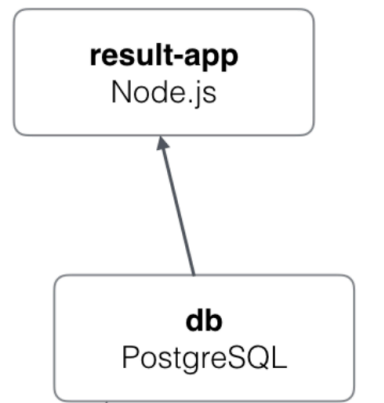
-
Check if all five containers are running:
docker ps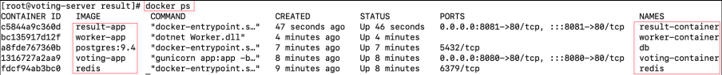
Now, you can open the browser to check the result website via the
port 8081
:
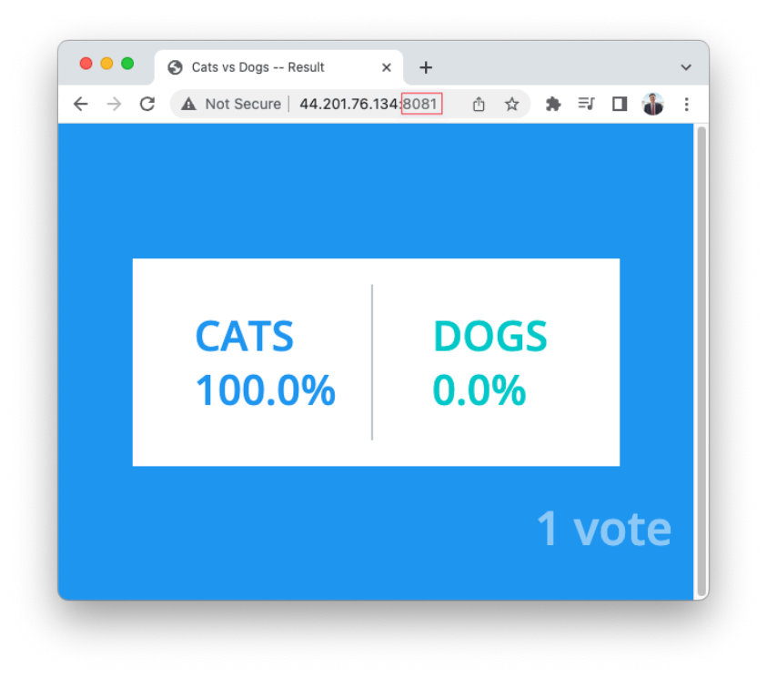
-
You can send the voting website (
port 8080- http://public-ip-address-ec2:8080/ ) to your friends and ask them to vote, and check the result website (port 8081- http://public-ip-address-ec2:8081/ ):
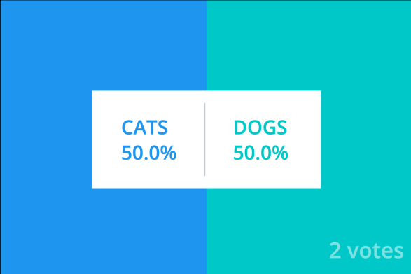
[Tips for testing] you can test the app by opening the 8080 in incognito mode in the browser to be able vote multiple times and the result website should show the result updated in real time!
In conclusion, you have successfully deployed the voting application by running and connecting 5 different containers.
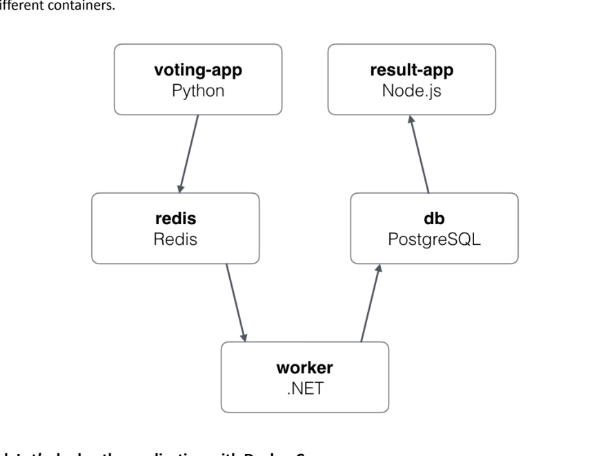
🚀 1d. Deploy the application with Docker Compose
It took some time to deploy this application by running line by line commands.
A
better
way
is to use
Docker
Compose
by defining a
YAML
file
to configure your Docker application's services. Let’s get started!!!
Compose checkpoint: Which details from the manual docker run commands must the Compose file capture, such as images, ports, environment variables, volumes, dependencies, or networking?
-
Let’s install Docker Compose :
sudo curl -L
https://github.com/docker/compose/releases/latest/download/docker-compose-$(uname
-s)-$(uname -m) -o /usr/local/bin/docker-compose
sudo chmod +x /usr/local/bin/docker-compose
You can check out more about the installation of
Docker Compose
here:
https://docs.docker.com/compose/install/linux/
-
Let’s check the version of Docker Compose:
docker-compose version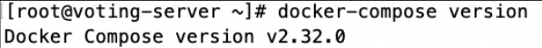
-
Let’s start from scratch so we need to stop all running containers and remove all containers:
docker kill $(docker ps -q)
docker rm $(docker ps -a -q)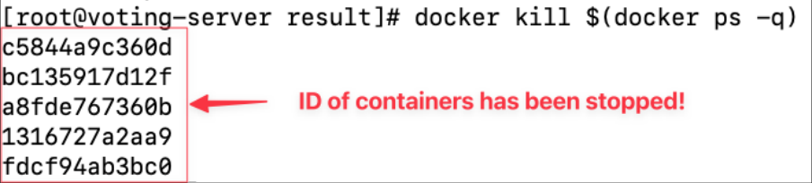
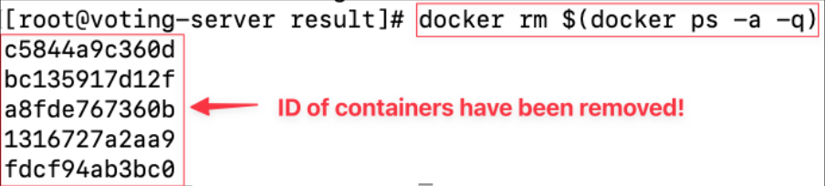
-
Let’s list all containers again to make sure all have been stopped and removed:
docker ps -a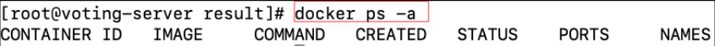
Note: please don’t delete any docker images as we still need to use them for our docker compose exercises.
Nice, now we just need to create a file
“
docker-compose
”
.yml
.
-
Before that, let’s get back to the home directory of root user:
cd ~-
Create a file “
docker-compose”.yml
nano docker-compose.ymlHistorically, Docker Compose configuration files evolved from version 1 through 3. However, the Compose Specification (found at https://github.com/compose-spec/compose-spec ) has become the standard. Instead of requiring a specific version number, Docker Compose (v2 and later) interprets the file using the latest specification.
https://docs.docker.com/compose/compose-file/compose-file-v3/
Here is the content of our
docker-compose.yml
. Can you make sense of this file based on the documentation?
-
Note: By default, Docker Compose creates a network for these services. Each service can be reached by its service name (e.g., "vote", "redis", "db").
services:
redis:
image: redis
db:
image: postgres:9.4
environment:
POSTGRES_PASSWORD: "postgres"
vote:
image: voting-app
ports:
- "8080:80"
depends_on:
- redis
worker:
image: worker-app
depends_on:
- db
- redis
result:
image: result-app
ports:
- "8081:80"
depends_on:
- db
[Explanation]
This Compose file sets up a group of connected services. Each service runs in its own container:
Redis
provides a database cache,
Postgres
is a database storing data, a "
vote
" web app is accessible on
port 8080
, a "
worker
" service processes background jobs using both Redis and Postgres, and a "
result
" web app shows the results on
port 8081
. The
depends_on
lines control startup order, but they do not wait for a dependency to become healthy. All services can communicate by service name on the shared network.
-
To run the
docker-compose.yml, we just need to run the command:
docker-compose up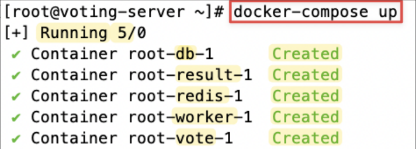
Let’s check the website via port 8080 and 8081 ! Everything should work like before! Yayyyyy!
-
To stop our Docker Compose from running then you can press Ctrl + C:
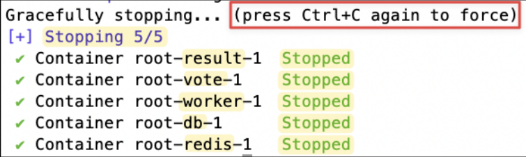
-
In case, you are interested in running this docker compose in the “detached” mode (With
-d, you immediately get back your shell prompt, and the containers keep running in the background), you can try:
docker-compose up -d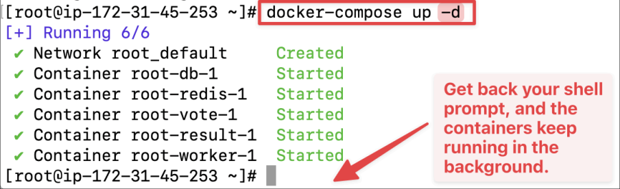
-
You can try to inspect the running containers due to that Docker compose:
docker ps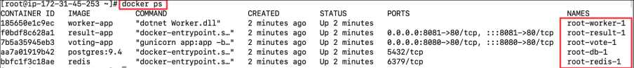
-
When you run with
-d(detached mode), the process is no longer tied to your terminal, so you can’t just stop it with Ctrl+C. Instead, you manage it through Docker Compose commands:
docker-compose down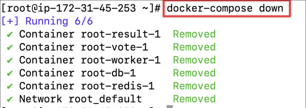
Congratulations on successfully deploying the voting application using Docker Compose! Amazing skills!
🐝 2. Docker Swarm
In this section, we will learn how to create a swarm cluster (master and workers)
🖥️ 2a. Create the Swarm manager and worker servers
In this experiment, we only need three EC2 instance to learn docker swarm:
-
Here are the settings of these three EC2 instances:
-
Name : “
docker-master”, “docker-worker-1” or “docker-worker-2” -
OS : default Amazon Linux 2023 AMI (Free-tier)
-
Instance Type : t3.micro (Free-tier)
-
Key pair : select and reuse your old key in other labs (
devops_project_key) -
Storage : Default 8 GB is plenty enough!
-
Security Group:
-
Optional Name:
docker-swarm-security-group -
Source Type: Anywhere
-
Open these ports:
-
22 for SSH
-
2376 : used for secure
Dockerclient communication. This port is required for Docker Machine to work. Docker Machine is used to orchestrate Docker hosts. -
2377 : used for communication between the nodes of a
Docker Swarmor cluster. It only needs to be opened on manager nodes. -
7946 : Used for communication among nodes (container network discovery).
-
4789 : overlay network traffic (container ingress networking).
-
8080-8090 for web application
-
-
-
Please create the security group “
docker-swarm-security-group
” once and let other instances reuse the existing security group.
📦 2b. Install and configure Docker
Please choose either Option A - Manual Setup or Option B - Auto Setup with User Data Script:
Option A - Manual Setup:
-
Please log in to all EC2 instances over SSH.
-
Please change the host name for all EC2 instances accordingly so we can easily manage them like so:
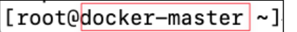
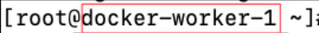
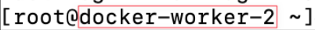
Hint : for a reminder, you can use this command to change the hostname:
sudo su -
echo "new-host-name" > /etc/hostname
reboot-
Don’t forget to login as the root user:
sudo su --
Install docker on all EC2 instances:
yum install -y docker-
Start docker service on all EC2 instances:
service docker startOption B - User Data Script:
-
Click on Advanced details
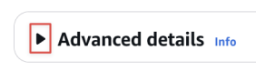
-
Upload or paste in the User data:
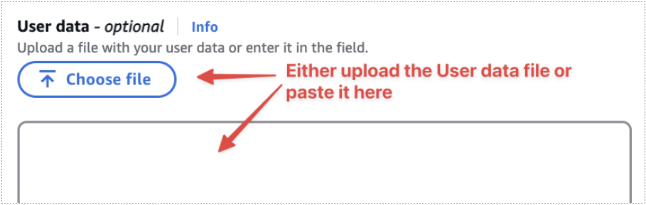
When you configure the EC2 instances above, please paste in this example EC2 User Data script when launching each EC2 instance. With this script, you can automate setting the hostname, installing
Docker
, and starting the Docker service. You will need to tailor the variable
HOSTNAME
to match each instance’s intended hostname (e.g.,
docker-master
,
docker-worker-1
,
docker-worker-2
).
-
To use different hostnames for each instance:
-
For the master: Replace
HOSTNAME="docker-master" -
For worker 1: Replace
HOSTNAME="docker-worker-1" -
For worker 2: Replace
HOSTNAME="docker-worker-2"
-
#!/bin/bash
# Set a variable for the hostname. Modify this value as needed.
HOSTNAME="docker-master"
# Set the hostname using the variable
hostnamectl set-hostname "$HOSTNAME"
# Update packages
yum update -y
# Install Docker
yum install -y docker
# Start Docker service
service docker start# Enable Docker to start on boot
systemctl enable dockerAfter Option A and Option B, continue below here:
-
Check the status of docker service on all EC2 instances to make sure it is active (running):
service docker status⌨️ 2c. Practise Docker Swarm commands
-
On the master node , please start the swarm (by selecting it to be swarm master/manager):
docker swarm init-
On the slave/worker node , please join the swarm by copying and pasting the above suggested command:
docker swarm join --token <long-token-string>-
On the master node , you can list all nodes in the swarm.
Swarm checkpoint: How does losing a worker differ from losing the manager? Which node role maintains desired state, and which nodes are eligible to run service tasks?
docker node ls* means the current server that you are on.
-
A node can leave the swarm by running the command so please switch to one of the workers and make it leave the swarm:
docker swarm leave-
On the master node, you can list all nodes in the swarm again.
docker node ls
As you can see the
docker-worker-1
is down and left the swarm already!
-
Let’s add the
docker-worker-1back to the swarm again!
-
On the master node, you can list all nodes in the swarm again. Note, you can see that the same node joining again will have a new ID instead of the old one.
docker node ls-
Let's remove the node which is already down so our node list can be more organised:
docker node rm <node_id or node_hostname>🚀 2d. Deploy services on the Swarm
-
On the master node , let's list all service commands of docker:
docker service --help
Let’s
see
Docker
Swarm
in
action!
An
NGINX
container is a Docker container that runs the NGINX high-performance web server. It is often used as a “hello world” example container because it’s simple, fast, and demonstrates many important container concepts without complexity. Read more here:
https://hub.docker.com/_/nginx
In
Docker Swarm
, a
service
is the fundamental unit of deployment and scaling. It’s essentially a definition that tells the swarm what container image to run, how many replicas of it to maintain, and how to distribute them across the cluster.
-
On the master node , create a service of nginx web server:
docker service create nginx-
On the master node , we can list services:
docker service ls-
On the master node , we can list the task of that service by its id:
docker service ps <service-id>
Note that: the task is running on the “
docker-master
" node.
In Docker Swarm, a task is the atomic unit of scheduling in Docker Swarm. Each replica of a service corresponds to one task, and that task runs exactly one container.
👉 So in short:
Service = the definition and desired state (e.g., “run 3 replicas of nginx”).
Task = one running instance of that definition (e.g., one container, on one node).
-
However, we forgot to define which port number to expose for our nginx server, so let's update the service accordingly:
docker service update <service-id> --publish-add 8080:80-
On the master node, we can list services:
-
Note: after updating the port number, the old container on
docker-masteris shutdown, the updated container is now running ondocker-worker-2in the screenshot (in your case, it could pick any random node in the cluster to run the container).
-
docker service ps <service-id>
Open the public ip address of the ec2 instance
where
the
updated
container
is
on
(in our screenshot, it shows it runs on
docker-worker-2
) and you can check the website on the browser via the
port 8080
as below:
-
On the master node, let's remove that service:
docker service rm <service-id>-
No services remain, so their containers have been stopped and removed.
-
On the master node , let's create a new service with replicas parameters :
-
Replicas in Docker ensure high availability and scalability by running multiple instances of a service, as seen in this command, which creates an Nginx service with 2 replicas , exposing port 8080 to the target port 80 on each instance.
-
docker service create --name nginx –=--publish published=8080,target=80 nginx-
Let’s check the information of our new service:
docker service ls
Note
: The above screenshot shows that Docker confirms the nginx service with 2 replicas has been created and both containers are running successfully. With the
--publish
flag you mentioned, the service would also be accessible on
port 8080
of the swarm nodes, routing traffic into container port 80.
-
Let’s inspect inside the tasks in our service:
-
You don’t have to use the raw service ID like docker service ps
<service-id>. You can also use the service name.
-
docker service ps <service-name>
As
you
can
see,
one
container
is
running
at
docker-worker-2
node
and
one
container
is
running
at
docker-master
node,
showing
proper
swarm
scheduling
and
service
distribution
-
[Switching terminal to where first container runs (eg,
docker-worker-2)] You can confirm if the container is actually running in thedocker-worker-2node:
docker ps-
[Switching terminal to where second container runs (eg,
docker-master)] You can also confirm if the container is actually running in thedocker-masternode:
docker ps-
[Switching terminal to
docker-master] However, if you do not want thedocker-masternode to run any container, just to control the swarm to ensure the master node have little of burden then you can run the command on the master node:
docker node update --availability drain docker-master-
After applying our previous command, the container of nginx in the master node is shut down, thus a new container of nginx in
docker-worker-1is launched to ensure the number of containers of nginx in the swarm is always 2 (the effect of replicas).
docker service ps nginx
Note
: you should see that by draining
docker-master
, the container that was running there was stopped, and Swarm automatically launched a replacement container on another worker (
docker-worker-1
). This demonstrates Docker Swarm’s self-healing and load-balancing behavior: it keeps the service at the desired replica count, even when nodes are marked unavailable.
Good job so far!
Alright, hopefully now the
docker-worker
1
and
docker-worker
2
are listening to the port
8080
to serve the
nginx
websites. Please
open
the
public
IP
address
of
docker-worker
1
and
docker-worker
2
via the port
8080
to test if the homepage of nginx web server is showing.
[Our
Next
Task]
However,
we
want
users
to
access
the
website
via
a
common
IP
address
or
domain
name
so the
incoming
requests
will
be
spread
out
for
all
of
the
docker-worker
instances.
-
That's why we need to create a load balancer on AWS to do that!
-
Let's go! On the AWS dashboard, select the load balancer:
-
Choose Application Load Balancers as we want to redirect traffic from the balancer to our nginx application servers:
-
Enter basic information of your balancer:
-
Load balancer name :
my-docker-swarm-load-balancer-
A unique identifier for the load balancer within the AWS account.
-
-
Scheme: Internet-facing
-
This makes the load balancer accessible from the internet.
-
It gets public IP addresses.
-
Its DNS name is publicly resolvable.
-
Requires mapping to a public subnet.
-
Best when your Docker Swarm service should be accessible from outside (e.g., web apps).
-
-
IP address type: IPv4
-
Restricts the load balancer to only IPv4 addresses.
-
Suitable if your clients/users connect using IPv4 (most common scenario).
-
Simple and widely supported.
-
-
-
Availability Zone Mappings:
-
You can choose subnets in Availability Zones (AZs) within the
VPCwhere the load balancer will route traffic. -
Ideally, you should choose the specific availability zones which actually contain your EC2 instances. However, to keep to it simple, we can select all of them: us-east-1a, us-east-1b, us-east-1c, us-east-1d, us-east-1e, us-east-1f
-
High availability: Even if one AZ goes down, traffic can still be routed through others.
-
Better load distribution: The load balancer can spread traffic across multiple zones.
-
Resilience: Minimizes single points of failure.
-
-
-
We can select the same security groups of our docker security group to keep it simple (in theory, you only need to choose a group with the port you want to serve your clients, in our case, we can keep it simple by also choosing the
port 8080):
-
We need to create the target group first before we can route all traffic from the load balancer to it:
-
Create a target group of EC2 instances:
-
Let's enter the name of our target group of EC2 instances with the
port 8080:
-
Go next page:
-
Add all the
docker-workerinstances (docker-worker-1anddocker-worker-2) to this group:

-
Confirm the group details and finish the group registration:
-
Now, we can go back to the balancer setting page and select the target group we just created:
-
Confirm to create the balancer:
-
View your balancer after creating it:
-
Now, you can see the DNS name of the balancer which will be the URL link you should give to your clients/customers to open the website:
-
You should see that the load balancer is now active, internet-facing, and listening on
port 8080. You can use the provided DNS name with theport 8080to access your Docker Swarm Nginx service running across multiple nodes, with AWSELBautomatically distributing the traffic.
-
Note : it might take around two minutes for the load balancers to warm up enough to start directing the traffic so don’t panic if you don’t see the website right away using the DNS of the load balancer!
-
You can use the DNS Name to access the website running in the Docker Swarm service across multiple nodes being distributed in AWS ELB. Great success! Now you can see the website which is served by one of your many
docker-workerinstances within the load balancer!
Super awesome! Imagine for a very complex and popular website which got hundreds of thousands of views everyday, with a load balancer and hundreds of instances, you can distribute all the incoming traffics from users across among all of instances to make sure the load for each
instance small enough and if there is any container crashing then a new container will be launched to replace the old crashed one to make sure the availability of the website is always high!
-
You can check the visual resources map to see how the load balancer redirects traffic from the start to the end to ensure user requests to land on either one of the instances in the load balancer:
-
Traffic hitting the DNS of your load balancer on
port 8080→ listener → rule → forwarded to target group (docker-swarm) → distributed between 2 healthy EC2 instances (each serving Nginx onport 8080). This confirms that your Docker Swarm Nginx service is correctly integrated with the AWS Load Balancer and is ready for high availability.
-
-
Also, you can manage the health and traffic of your load balancer using CloudWatch
metricsin the Monitoring tab as below:-
The most important metrics to continuously monitor in CloudWatch for ELB are:
-
Target Response Time (latency)
-
Requests Count (traffic volume)
-
Target 4XXs and 5XXs (client/server errors)
-
ELB 5XXs (502/503/504) (load balancer-level issues)
-
Connection Errors / Rejected Connections (connectivity & scaling issues)
-
-
These will tell you whether your Docker Swarm Nginx service is healthy, responsive, and reachable through the load balancer.
-
Alright! I hope that's enough for you to have a taste of
Docker Compose
, Docker Swarm and Load Balancer.
Congratulations on completing this lab! You’ve taken important steps into the world of container orchestration and DevOps practices.
What you’ve built here may be a simple voting application, but the skills you’ve practiced are the same ones used to power large-scale, production-grade systems. Each command and configuration you’ve written is another building block toward mastering containerized deployments.
Remember:
-
Docker Compose helps you quickly set up and manage services for development and testing.
-
Docker Swarm allows you to orchestrate containers across clusters with reliability and scalability.
🧪 Challenge: Add Prometheus monitoring with Docker Compose
Goal
Enhance your
Docker Compose
skills by extending the existing multi-container application to include a new service. You'll configure
Prometheus
to monitor key
metrics
of your deployed application.
🎭 Scenario and implementation steps
Imagine you’re running the voting application in a real-world production environment, where monitoring application health and performance is critical. You’ve been tasked to integrate Prometheus , a popular metrics monitoring tool, into the existing Docker Compose setup. This new service will track application metrics, such as vote counts, and provide insights into application behavior through real-time monitoring.
Monitoring checkpoint: A vote counter proves that traffic is occurring, but does it prove the application is healthy? Which additional metric would help you detect errors or slow responses?
Step-by-step guide
-
For these exercises we will get back to work on the voting server.
-
Open the new port 9090 for the security group for Prometheus.
-
SSH to your EC2
voting-serveras root again!
sudo su --
Ensure your existing application is running by starting by confirming your original application is working correctly:
docker-compose up -d-
Check that all services (vote, worker, result, redis, db) are healthy:
docker ps
This is an example of how you can modify your
Dockerfile
to integrate Prometheus instrumentation for the
Python
(
Flask
) vote application. What we need to do:
-
Install the
prometheus_clientPython library inside the container so we can use it in theapp.py. -
In
app.py, we will add code to expose a /metrics endpoint and increment counters or other metrics. (This part is done in code, not in Dockerfile.) -
Let’s get started by changing working directory to the vote folder:
cd simple-voting-application/vote-
Add prometheus library to
requirements.txt: if you add prometheus to your requirements file, you don’t need to change much in the Dockerfile. Yourrequirements.txtmight look like this:
FlaskRedis
gunicorn
prometheus_client-
[Optional] Alternatively, you can instead choose to install prometheus directly in the dockerfile like:
…
RUN pip install -r requirements.txt
# Additional line to install prometheus_client
RUN pip install prometheus_client==0.16.0
…-
Next, you need modify the existing
app.pyto integrate Prometheus metrics. We will:-
Import the Prometheus client library.
-
Define a
metric(a Counter) to track votes. -
Increment the counter each time a vote is cast.
-
Expose a /
metrics endpointto allow Prometheus to scrape these metrics.
-
...
import logging
# Import Prometheus client library
from prometheus_client import Counter, generate_latest
option_a = os.getenv('OPTION_A', "Cats")
...
app.logger.setLevel(logging.INFO)
# Define a counter metric to count the number of votes per choice
vote_counter = Counter(
'app_votes_total',
'Total number of votes',
['choice']
)
def get_redis():
...
...
app.logger.info('Received vote for %s', vote)
# Increment the Prometheus counter for the chosen option
vote_counter.labels(choice=vote).inc()
data = json.dumps({'voter_id': voter_id, 'vote': vote})
...
# Expose a /metrics endpoint for Prometheus scraping
@app.route("/metrics")
def metrics():
return generate_latest(), 200, {
'Content-Type': 'text/plain; charset=utf-8'
}
if __name__ == "__main__":
app.run(host='0.0.0.0', port=80, debug=True, threaded=True)-
Rebuild your
Dockerimage (after ensuringprometheus_clientis installed viarequirements.txtor a pip install line in the Dockerfile). Make sure the image can be successfully built.
docker build . -t voting-app-
Change to the directory where your
docker-compose.ymlresides (likely /root if you followed the initial instructions).
cd ~-
Create the
prometheus.ymlfile to scrape the vote app’s /metrics endpoint:
global:
scrape_interval: 2s
scrape_configs:
- job_name: 'vote_app'
static_configs:
- targets: ['vote:80']
# Add more scrape_configs as needed once you have other services exposing
metrics.[Explanation] The following settings tell Prometheus how often to collect metrics and where to find them:
-
scrape_interval: Prometheus will scrape every 2 seconds, which is fine for testing. -
targets: ['vote:80'] : This means Prometheus will try to scrape metrics at http://vote:80/metrics . Since vote is the service name defined in
docker-compose.ymland all services share the same Docker network, this should work correctly. Your vote service runs onport 80internally (mapped to 8080 externally), so internally Prometheus can reach it at vote:80.
With these changes, Prometheus will be able to scrape the /metrics endpoint and display real-time voting data.
-
Edit your existing
docker-compose.ymlto add a new Prometheus service. You can add it at the bottom of the file.
YAML reminder: Keep the two-space indentation shown below. YAML uses indentation to define which settings belong to each service.
services:
redis:
image: redis
db:
image: postgres:9.4
environment:
POSTGRES_PASSWORD: "postgres"
vote:
image: voting-app
ports:
- "8080:80" # Open at http://<EC2_PUBLIC_IP>:8080
depends_on:
- redis
worker:
image: worker-app
depends_on:
- db
- redis
result:
image: result-app
ports:
- "8081:80" # Open at http://<EC2_PUBLIC_IP>:8081
depends_on:
- db
prometheus:
image: prom/prometheus:latest
volumes:
- "./prometheus.yml:/etc/prometheus/prometheus.yml:ro"
ports:
- "9090:9090" # Open at http://<EC2_PUBLIC_IP>:9090
depends_on:
- vote
- result
- db
- redis
- worker[Explanation] The following settings expose Prometheus, mount its configuration, and define service startup relationships:
-
Exposure of Prometheus : Prometheus is exposed at 9090:9090 , so you can access the Prometheus UI at http://
<EC2_PUBLIC_IP>:9090. -
Mounting of
prometheus.yml: You’ve mounted ./prometheus.ymlinto/etc/prometheus/prometheus.ymlin the Prometheus container. -
Service Dependencies: You have
depends_onentries for each service. Whiledepends_onensures the order of starting containers, it doesn’t guarantee that a service is fully ready. However, since Prometheus continuously scrapes, it’s not a big issue. -
Now, we are ready! Let’s start the entire stack with docker compose:
docker-compose up -d-
Now you can access:
-
Access the vote app at http://
<EC2_PUBLIC_IP>: 8080 -
Access the result app at http://
<EC2_PUBLIC_IP>: 8081 -
Access Prometheus dashboard at http://
<EC2_PUBLIC_IP>: 9090
-
If everything is configured correctly, Prometheus should start scraping the vote service’s metrics, and you’ll be able to see them in Prometheus under the “Status -> Targets” pages.
-
Time to test
app_votes_totalmetric output!-
First, please open the browser incognito mode to allow you to make multiple votes to at least increase the count by one. Prometheus client libraries only start reporting counter metrics after they’ve been incremented at least once
-
In my example, I manually vote many times for testing:
-
-
-
Check the metrics endpoint directly from the terminal
curl http://<EC2_PUBLIC_IP>:8080/metrics | grep app_votes_total
Replace
<EC2_PUBLIC_IP>
with your actual server’s IP. You should see something like this (could be slightly different for you):
app_votes_total{choice="a"} x.0
app_votes_total{choice="b"} x.0
If you don’t see any lines for
app_votes_total
, it means the application hasn’t recorded any valid votes.
-
Query the Metric in Prometheus dashboard:
-
In the Query box, type
app_votes_totaland press Enter. -
You should see the graph for
app_votes_totalfor each option (Cat or Dog).
-
[Website Down Simulation] To simulate the vote website going down, you can simply stop or remove the container running the vote service.
-
Stop the Container: With Docker Compose, you can just stop that one service:
docker-compose stop vote-
What Happens in Prometheus:
-
Prometheus continuously scrapes targets at the configured interval.
-
Once the vote container is stopped/removed, Prometheus will fail to reach http://vote:80/metrics .
-
After one or two failed scrapes (depending on your configuration), Prometheus will mark the
vote_apptarget as “down.” -
In the Prometheus UI (http://
<EC2_PUBLIC_IP>:9090/targets), you’ll see thevote_appjob listed as “down”.
-
Great job completing this lab! You’ve learned how to deploy a multi-container app with Docker Compose and scale it with
Docker Swarm
. These tools make managing complex applications simpler and more efficient, whether for development or production. Keep practicing, and you’ll master these essential DevOps skills in no time!
🎮 Bonus: Practise Docker Swarm online
In case you want to revise and work on your docker swarm skills, please follow this very short fun learning labs for
Docker
swarm from Docker:
-
Open this link: https://training.play-with-docker.com/ops-s1-swarm-intro/
-
Have fun! Always be learning!